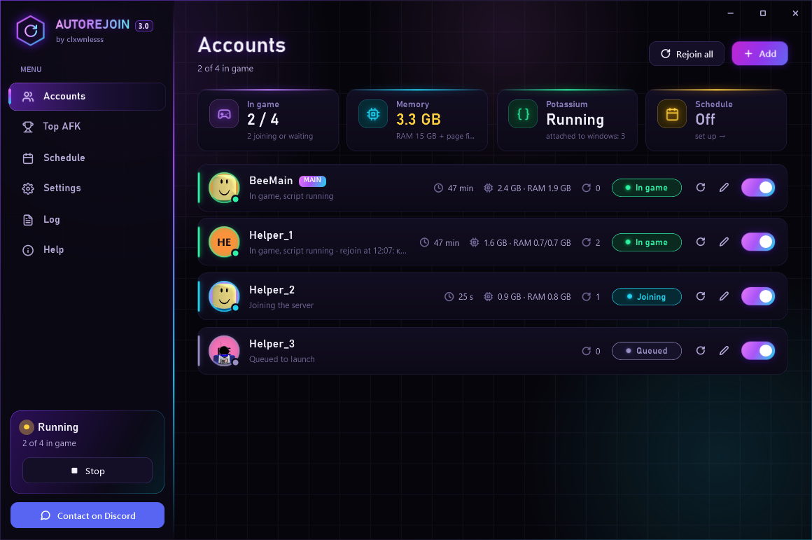
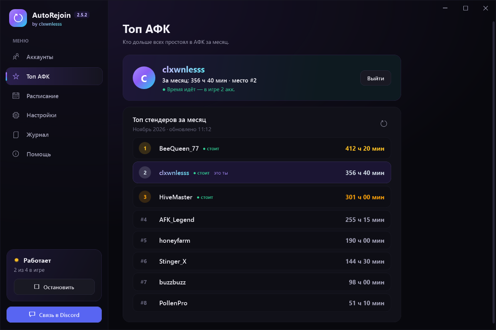

Disconnected, kicked, frozen or out of memory — AutoRejoin notices and rejoins on its own. One account at a time, main first. Wake up to a farm that never stopped.
Unzip, run AutoRejoin.exe, add accounts, press Start. Updates itself.

Built for people who run several Bee Swarm accounts overnight.
Disconnects, kicks, error 277, frozen windows and crashes — the account is back in game automatically.
Log in with a password or a cookie. Accounts launch one by one, your main always first.
🔴 dropped / 🟢 back in game, plus a status report every N minutes to your webhook.
Link the app and control it from Discord: see who is in game, start, stop, rejoin.
Restarts windows that leak memory, daily restart and automatic cleanup of old logs.
The server counts your hours in game. Top 3 every month get a role in our Discord.
No installers, no accounts, no ads.
Get AutoRejoin.zip from GitHub Releases and extract it anywhere.
Open AutoRejoin.exe, press Add, sign in or paste a cookie. Mark your main.
Go to sleep. AutoRejoin keeps every account in game and tells you on Discord if anything happens.

Create a free account in the Top AFK tab. While your accounts are in game, the server counts the hours — no cheating, time is tracked server-side.
🏆 See the leaderboard on DiscordYes — free and open source. Every line of code is on GitHub.
As many as your PC can run. They start one at a time, main account first, so Roblox does not choke.
The app is not signed with a paid certificate, so SmartScreen warns about it. Click More info → Run anyway. You can read and build the source yourself.
Only on your PC, encrypted with Windows DPAPI. They are never sent to our server. Never share your .ROBLOSECURITY cookie with anyone.
Automation tools may break Roblox's rules. Use AutoRejoin at your own risk.
Free forever. Takes a minute to set up.